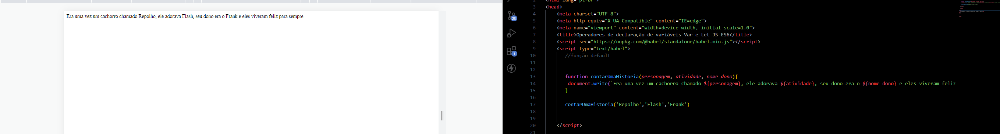

<!DOCTYPE html>
<html lang="pt-br">
<head>
    <meta charset="UTF-8">
    <meta http-equiv="X-UA-Compatible" content="IE=edge">
    <meta name="viewport" content="width=device-width, initial-scale=1.0">
    <title>Operadores de declaração de variáveis Var e Let JS ES6</title>
    <script src="https://unpkg.com/@babel/standalone/babel.min.js"></script>
    <script type="text/babel">
       //função arrow

    //    let quadrado = function(x){
    //     return x * x
    //    }

    //    let quadrado = (x) => {
    //     return x * x
    //    }

    //    let quadrado = (x) => x * x // return implicito


    //    document.write(quadrado(3))
    
    // let parOuImpar = function(numero) {
        
    //     if(numero % 2 === 0){
    //         return 'par'
    //     }else {
    //         return 'impar'
    //     }
    // }

    // document.write(parOuImpar(7))

    // let parOuImpar = numero => {
        
    //     if(numero % 2 === 0){
    //         return 'par'
    //     }else {
    //         return 'impar'
    //     }
    // }

    let parOuImpar = numero => numero % 2 === 0 ? 'par' : 'impar' //return implicito

    document.write(parOuImpar(7))


    </script>

    <style>
        body{
            
            text-align: center;
        }
        h3{
            text-align: center;
        }
        img{
            display: block;
            margin-left: auto;
            margin-right: auto;
            border: 1px solid red;
            width: 950px;
            /* height: 250px; */
        }
    </style>

</head>
<body>
    <!-- <h3>Operadores de declaração de variáveis Tag Função default</h3> -->
<div>
    <!--  -->
</div>


</body>
</html>